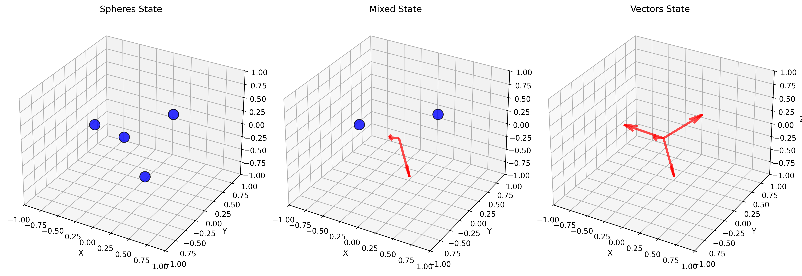
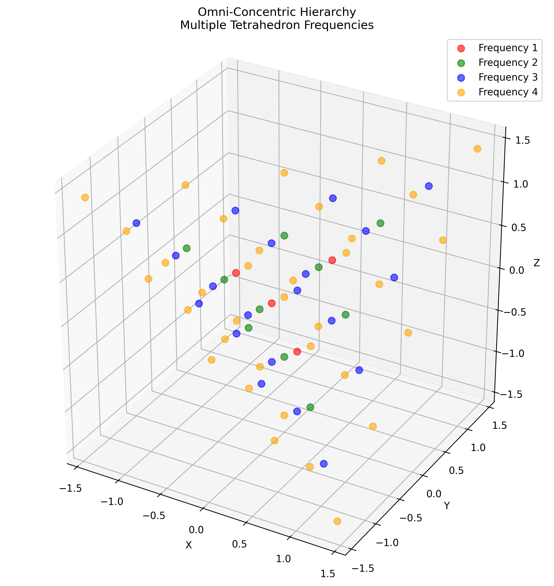
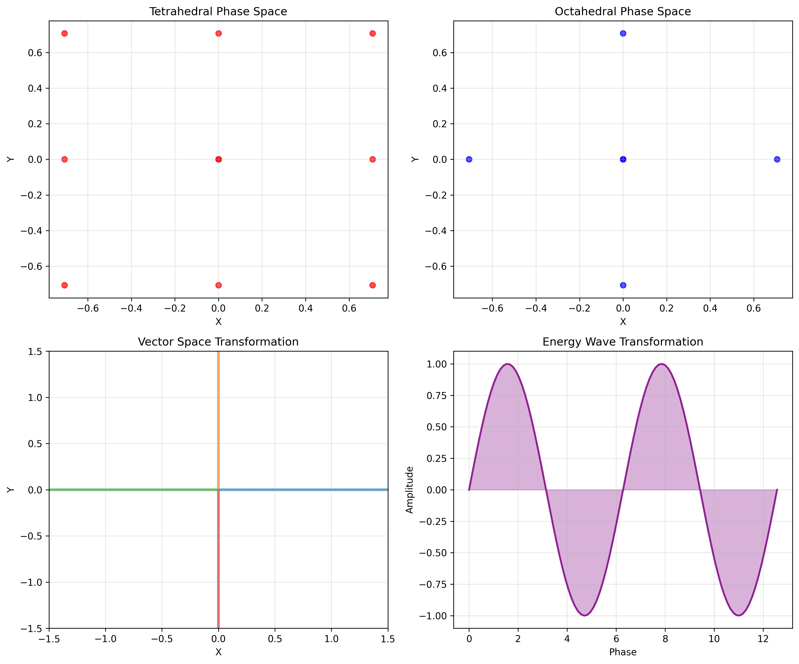
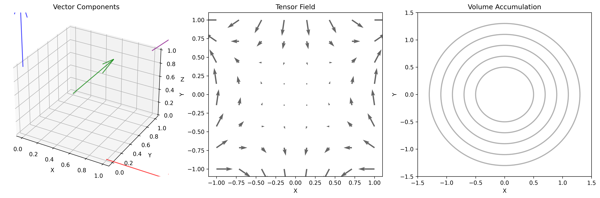
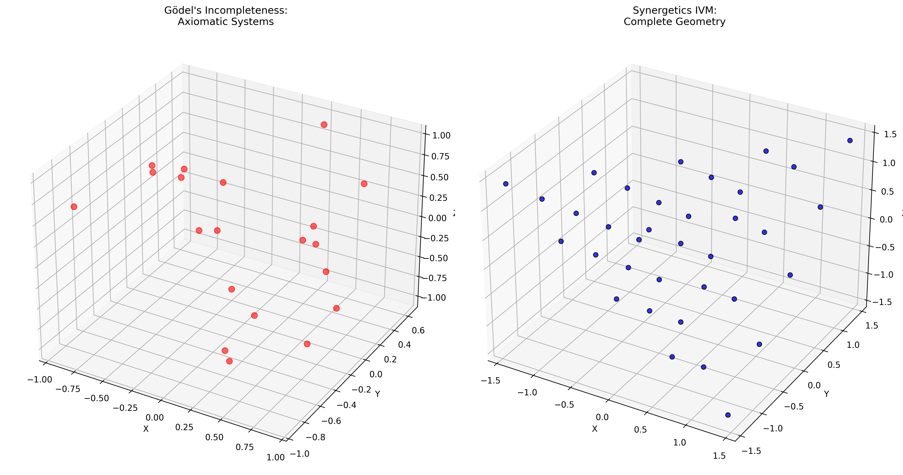
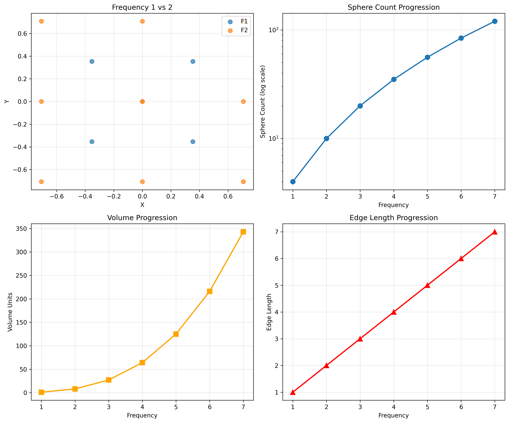

🔄 Sphere-to-Vector Transformation
Quantum point transformation process where spheres shrink to zero size and become vectors extending to 1 inch, demonstrating the fundamental duality of matter and energy.

Quote: "When the spheres shrink to 'zero size' the touching points between the spheres become vectors which will have extended to 1 inch."
🏗️ Omni-Concentric Hierarchy
Nested polyhedron relationships showing how different frequencies of tetrahedrons contain all lower frequencies, creating an infinite hierarchy of inter-transforming structures.

Quote: "omni-concentric hierarchy of different sizes and shapes of 6 symmetrical polyhedrons"
🌌 Phase Space Transformations
The 3 separate spaces within the IVM - tetrahedral, octahedral, and inverted tetrahedral spaces - that particles transition through during quantum transformations.

Quote: "the 3 separate spaces, tetrahedral, octahedral and inverted tetrahedral spaces"
📊 Vector/Tensor/Volume Unity
Demonstration of mathematical consistency between energy vectors, gravity tensors, and tetrahedral volumes in whole rational units.

Quote: "energy vectors, gravity tensors and tetrahedral volumes"
🎯 Godel Abrogation
How Synergetics geometry provides a complete coordinate system that addresses the limitations identified by Gödel's Incompleteness Theorem.

Quote: "Synergetics geometry Abrogates, or makes defunct, Goedel's Incompleteness Theorem"
📈 Frequency Coordination
How frequency-coordinated polyhedral continuums enable whole rational unit accounting of dimension-setting energy vectors and gravity tensors.

Quote: "frequency coordinated polyhedral continuums"